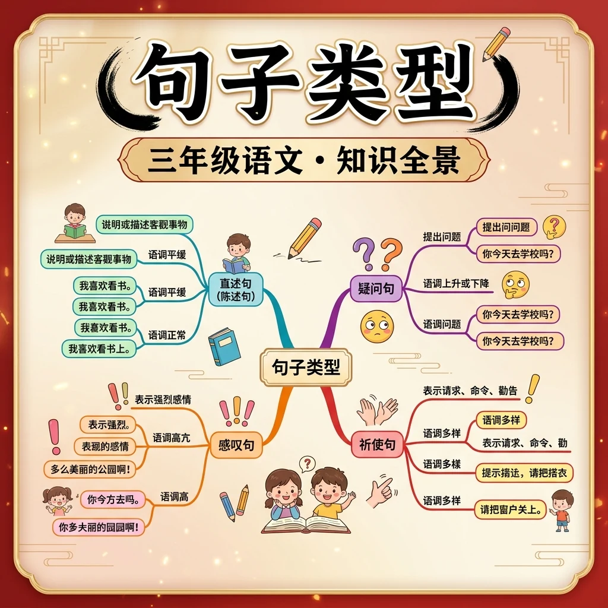

🌍 And（已知）：我们已经有了一定的基础知识
⚡ But（问题）：但还有一个重要概念需要深入理解
💡 Therefore（新知）：因此通过本节课的学习，我们将掌握新知识并能灵活运用
学习前先测一测，了解你的起点 ✨
1. 你在日常阅读中遇到不理解的词语时，通常会？
2. 好的写作最重要的是？
⭐ 答对题目得星星 · 集齐成就！
学习要用心，理解比死记更重要；多问"为什么"，把知识连成网
和前测对比一下，看看你进步了多少！ 🚀
1. 学完本节课，你对这个语文知识点的掌握程度是？
2. 你能用今天学的知识写一个句子或段落吗？
💡 常见错误往往就在细节中，仔细检查每一步！
和 AI 对话，深化对本节课知识点的理解
💬 参考提示词（复制给 AI 使用）：
✨ 可以用上面的提示词与 AI 展开深度对话，AI 会根据你的回答给出个性化指导。
回忆：今天学了哪些关键词和规则？试着说出来。
用自己的话解释今天学的核心概念，不看书能说清楚吗？
用今天的知识解决一个实际问题，或写一个新例子。
把今天的知识与已有知识联系起来：有什么共同点？有什么区别？能不能自己创造一道新题？
1. 你能说出三种不同的句子类型吗？2. 陈述句和疑问句有什么区别？3. 在什么情况下我们会使用感叹句？
1. 请将'老师批改了作业'改为被动句。2. '请不要在教室里奔跑'是什么类型的句子？3. 请写一个包含两种句子类型的复合句。
常见误区：学生容易混淆感叹句和带有感叹号的陈述句。错因在于没有理解感叹句需要有表达强烈感情的词语。诊断：通过分析句子结构和用词来区分，感叹句通常有'多么'、'真'等词语。
迁移挑战：设计一段对话，要求包含陈述句、疑问句、祈使句和感叹句四种类型，并分析每种句子在对话中的作用。
先独立作答，再点选项查看对错与错因。
下列哪个句子与小林写的"春天来了！"类型相同？
小美写的"请同学们爱护花草"属于：
哪个标点符号能帮助判断句子类型？
"____"这类句子通常用来发出命令或请求。（填句式名称）
答案：祈使句
祈使句用于表达要求
句子"多么精彩的表演啊！"中，____词表达了强烈感情。（填"多么"或"表演"）
答案：多么
感叹词加强语气
关于句子类型，正确的是：
收集校园里各种类型的句子
❓ 为什么‘下雨了’和‘你会游泳吗’是不同句子类型？
❓ 感叹句结尾一定要用感叹号吗？
❓ 把字句和被字句怎么区分才不会搞混？
学完这一课，这些问题你都能自信地回答。
🎯 能说出陈述句/疑问句/祈使句/感叹句4种基本类型
🎯 能判断把字句和被字句的施受关系
🎯 能分析例句中的标点符号与句子类型匹配度
像拆积木一样分解句子成分：谁+做什么+怎么做
陈述句讲事实，疑问句提问题，祈使句表要求，感叹句抒感情
把字句强调动作发出者（我把作业写完），被字句强调接受者（作业被我写完）
观察句子结尾标点：句号、问号、感叹号是类型身份证
用不同句式改写同一内容（例：陈述句→感叹句）
✅ 疑问句必须用问号
💡 忽略语气功能
✅ 补全‘被’+执行者（书被我拿走了）
💡 成分残缺
口诀：陈述讲事实，疑问打问号，祈使要行动，感叹感情妙
类比：句子类型像不同表情包：陈述句是平静脸，感叹句是爱心眼
And：学生已经会用简单句子表达‘谁做什么’
But：分不清陈述句和其他句型的区别
Therefore：学会用陈述句准确描述事实
陈述句就像小记者报道新闻，只讲事实不带感情。它句尾用句号，比如‘小明的书包里有3本书’就是在说一个真实情况。注意！如果改成‘小明的书包真重啊’就变成感叹句啦。
🌍 看教室里的时钟说现在时间，比如‘现在10点15分’就是陈述句；告诉妈妈‘今天语文课学了5个生字’也是在用陈述句。
哪个是陈述句？
